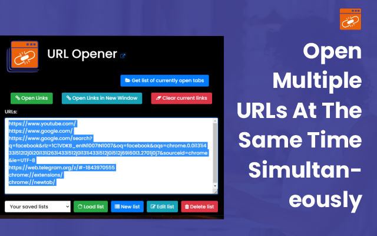

Ditch the hassle of copying and pasting URLs one by one. You are introducing the Ultimate URL Opener extension—a revolutionary tool for SEO specialists, researchers, and list builders. This intuitive, powerful extension redefines how you manage and open multiple URLs, ensuring your workflow is smooth and efficient. Paste your URLs, click, and let the magic unfold.
Wave goodbye to tab overload and cluttered browser windows. With the URL Opener Chrome extension, you can open countless URLs simultaneously, centralizing your tasks and maximizing productivity. Whether curating lists, conducting in-depth research, or handling multiple websites, this extension streamlines your operations and optimizes your workflow.
Enhance your work experience with smarter URL management. Discover the effortless efficiency of the Ultimate Bulk URL Opener extension and unlock limitless possibilities. Embrace a new level of productivity and say farewell to the laborious process of opening URLs individually. Welcome to your refreshed, organized digital workspace.
